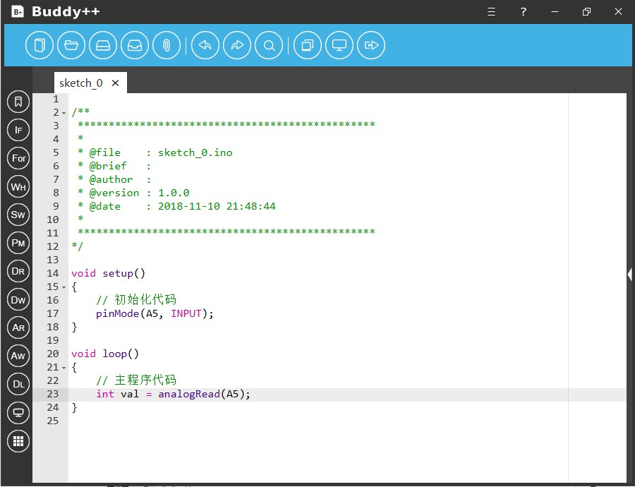
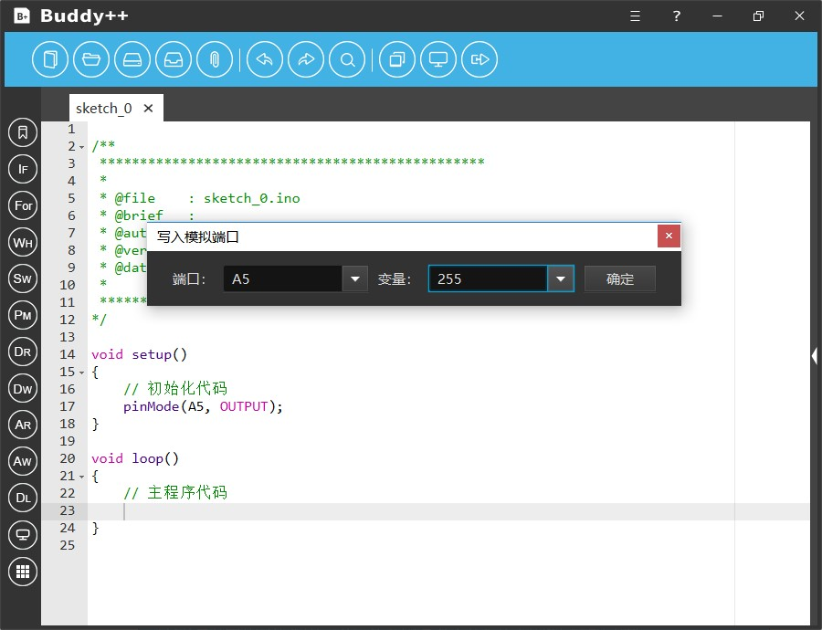
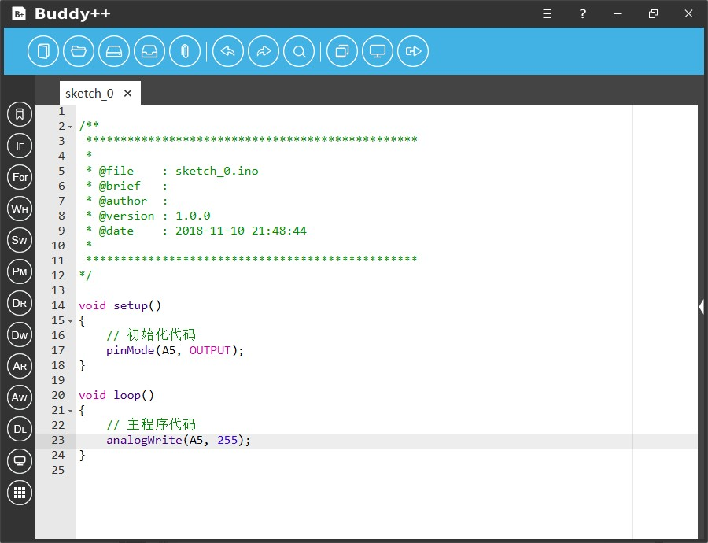

Buddy++为开发者提供便捷的模拟端口信号读写工具，开发者可以通过辅助工具读取指定模拟端口的电平信号，同理也可以向指定的模拟端口写入电平信号。
使用模拟端口读取工具时开发者点击左侧工具栏纵向第九个图样为“AR”简写的图标即可弹出“AnalogRead模拟端口读取”工具。对话框中开发者需要通过下拉菜单指定读取的模拟端口编号，然后选择一个变量用于信号的存储。完成后点击确定按钮，工具将会在代码区指定位置插入相关的代码片段。

使用模拟端口写入工具时开发者点击左侧工具栏纵向第十个图样为“AW”简写的图标即可弹出“AnalogWrite数字端口写入”工具。对话框中开发者需要通过下拉菜单指定写入的模拟端口编号，然后选择写入模拟电平信号（数值范围为0-255）。完成后点击确定按钮，工具将会在代码区指定位置插入相关的代码片段。

